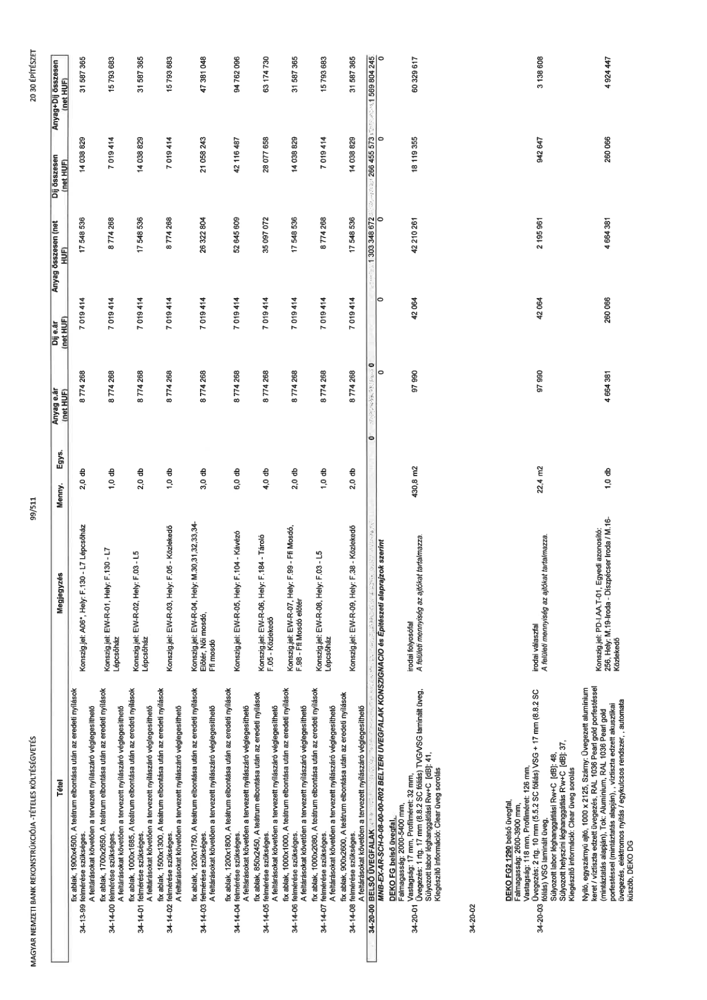

| Tétel | Megjegyzés | Menny. | Egys. | Anyag e.ár (net HUF) | Díj e.ár (net HUF) | Anyag összesen (net HUF) | Díj összesen (net HUF) | Anyag+Díj összesen (net HUF) |
|---|---|---|---|---|---|---|---|---|
| 34-13-99 fix ablak, 1900x4500, A teátrum elbontása után az eredeti nyílások felmérése szükséges. A feltárásokat követően a tervezett nyílászáró véglegesíthető | Konszig.jel: AD6*, Hely: F.130 - L7 Lépcsőház | 2,0 | db | 8 774 268 | 7 019 414 | 17 548 536 | 14 038 829 | 31 587 365 |
| 34-14-00 fix ablak, 1700x2650, A teátrum elbontása után az eredeti nyílások felmérése szükséges. A feltárásokat követően a tervezett nyílászáró véglegesíthető | Konszig.jel: EW-R-01, Hely: F.130 - L7 Lépcsőház | 1,0 | db | 8 774 268 | 7 019 414 | 8 774 268 | 7 019 414 | 15 793 683 |
| 34-14-01 fix ablak, 1000x1685, A teátrum elbontása után az eredeti nyílások felmérése szükséges. A feltárásokat követően a tervezett nyílászáró véglegesíthető | Konszig.jel: EW-R-02, Hely: F.03 - L5 Lépcsőház | 2,0 | db | 8 774 268 | 7 019 414 | 17 548 536 | 14 038 829 | 31 587 365 |
| 34-14-02 fix ablak, 1000x1300, A teátrum elbontása után az eredeti nyílások felmérése szükséges. A feltárásokat követően a tervezett nyílászáró véglegesíthető | Konszig.jel: EW-R-03, Hely: F.05 - Közlekedő | 1,0 | db | 8 774 268 | 7 019 414 | 8 774 268 | 7 019 414 | 15 793 683 |
| 34-14-03 fix ablak, 1200x1750, A teátrum elbontása után az eredeti nyílások felmérése szükséges. A feltárásokat követően a tervezett nyílászáró véglegesíthető | Konszig.jel: EW-R-04, Hely: M.30,31,32,33,34- Előtér, Női mosdó, Ffi mosdó | 3,0 | db | 8 774 268 | 7 019 414 | 26 322 804 | 21 058 243 | 47 381 048 |
| 34-14-04 fix ablak, 1200x1800, A teátrum elbontása után az eredeti nyílások felmérése szükséges. A feltárásokat követően a tervezett nyílászáró véglegesíthető | Konszig.jel: EW-R-05, Hely: F.104 - Kávézó | 6,0 | db | 8 774 268 | 7 019 414 | 52 645 609 | 42 116 487 | 94 762 096 |
| 34-14-05 fix ablak, 850x2450, A teátrum elbontása után az eredeti nyílások felmérése szükséges. A feltárásokat követően a tervezett nyílászáró véglegesíthető | Konszig.jel: EW-R-06, Hely: F.184 - Tároló F.05 - Közlekedő | 4,0 | db | 8 774 268 | 7 019 414 | 35 097 072 | 28 077 658 | 63 174 730 |
| 34-14-06 fix ablak, 1000x1000, A teátrum elbontása után az eredeti nyílások felmérése szükséges. A feltárásokat követően a tervezett nyílászáró véglegesíthető | Konszig.jel: EW-R-07, Hely: F.99 - Ffi Mosdó, F.98 - Ffi Mosdó előtér | 2,0 | db | 8 774 268 | 7 019 414 | 17 548 536 | 14 038 829 | 31 587 365 |
| 34-14-07 fix ablak, 1000x2080, A teátrum elbontása után az eredeti nyílások felmérése szükséges. A feltárásokat követően a tervezett nyílászáró véglegesíthető | Konszig.jel: EW-R-08, Hely: F.03 - L5 Lépcsőház | 1,0 | db | 8 774 268 | 7 019 414 | 8 774 268 | 7 019 414 | 15 793 683 |
| 34-14-08 fix ablak, 900x2600, A teátrum elbontása után az eredeti nyílások felmérése szükséges. A feltárásokat követően a tervezett nyílászáró véglegesíthető | Konszig.jel: EW-R-09, Hely: F.38 - Közlekedő | 2,0 | db | 8 774 268 | 7 019 414 | 17 548 536 | 14 038 829 | 31 587 365 |
| 34-20-00 BELSŐ ÜVEGFALAK | NaN | NaN | NaN | 0 | 0 | 1 303 348 672 | 266 455 573 | 1 569 804 245 |
| MNB-EX-AR-SCH-0-08-00-00-R02 BELTÉRI ÜVEGFALAK KONSZIGNÁCIÓ és Építészeti alaprajzok szerint | NaN | NaN | NaN | 0 | 0 | 0 | 0 | 0 |
| 34-20-01 DEKO FG belső üvegfal, Falmagasság: 2000-5400 mm, Vastagság: 17 mm, Profilméret: 32 mm, Üvegezés: 1 rtg. 17 mm (8.8.2 SC fóliás) TVG/VSG laminált üveg, Súlyozott labor léghanggátlási Rw+C [dB]: 41, Kiegészítő információ: Clear üveg sorolás | irodai folyosófal A felületi mennyiség az ajtókat tartalmazza. | 430,8 | m2 | 97 990 | 42 064 | 42 210 261 | 18 119 355 | 60 329 617 |
| 34-20-02 | NaN | NaN | NaN | 0 | 0 | 0 | 0 | 0 |
| 34-20-03 DEKO FG2 1290 belső üvegfal, Falmagasság: 2600-3900 mm, Vastagság: 118 mm, Profilméret: 126 mm, Üvegezés: 2 rtg. 10 mm (5.5.2 SC fóliás) VSG + 17 mm (8.8.2 SC fóliás) VSG laminált üveg, Súlyozott labor léghanggátlási Rw+C [dB]: 48, Súlyozott helyszíni léghanggátlás Rw+C [dB]: 37, Kiegészítő információ: Clear üveg sorolás | irodai válaszfal A felületi mennyiség az ajtókat tartalmazza. | 22,4 | m2 | 97 990 | 42 064 | 2 195 961 | 942 647 | 3 138 608 |
| 34-20-04 Nyíló, egyszárnyú ajtó, 1000 x 2125, Szárny: Üvegezett alumínium keret / víztiszta edzett üvegezés, RAL 1036 Pearl gold porfestéssel (mintáztatás alapján), Tok: Alumínium, RAL 1036 Pearl gold porfestéssel (mintáztatás alapján)., víztiszta edzett akusztikai üvegezés, elektromos nyitás / egységkulcsos rendszer,, automata küszöb, DEKO DG | Konszig.jel: PD-I.-AA.T-01, Egyedi azonosító: 256, Hely: M.19-Iroda - Diszpécser iroda / M.16-Közlekedő | 1,0 | db | 4 664 381 | 260 066 | 4 664 381 | 260 066 | 4 924 447 |
